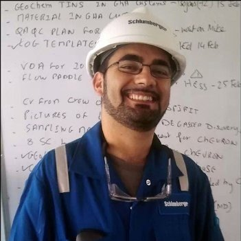

Passato e presente
Stratigrafia
Una colonna stratigrafica si legge dall’alto verso il basso, nello stesso verso in cui si scava. Questa comincia sotto l’Etna e arriva a oggi. Come quasi tutte le colonne vere ha una discordanza nel mezzo: un punto in cui la sedimentazione si interrompe, e quello che viene dopo si deposita su un piano completamente diverso.
Substrato
infanzia – 2009-
Le medie
Collegio salesiano
Catania
Disciplina e rispetto delle regole, imparati esattamente all’età che hanno adesso i miei studenti. Mi torna utile più spesso di quanto avrei immaginato.
-
2001
Perito informatico
ITI “Galileo Ferraris” · Catania
La scelta più facile della mia vita: mi piaceva l’informatica e l’ITIS era la scuola giusta.
-
2006 – 2009
Geologia
Università degli Studi di Catania · specialistica 110/110 e lode
Triennale in Geologia applicata, poi specialistica in Scienze geologiche e abilitazione alla professione. Un percorso di studi che rifarei mille volte.
Campo
2009 – 2016
-
2009 – 2011
Mud logging geologist
Geoservices · Ghana, Costa d’Avorio, Camerun, Tanzania, Norvegia, Tunisia
Raccolta e descrizione al microscopio dei frammenti di roccia che risalgono con il fango, bilanci volumetrici durante le manovre, manutenzione dei sensori. Promosso senior dopo tre mesi.
-
2011 – 2016
Field service engineer
Schlumberger, dopo l’acquisizione di Geoservices · Congo, Suriname, Danimarca, Norvegia, Regno Unito
Una squadra di cinque persone da formare e coordinare, i sensori da tenere in taratura, i parametri di perforazione da sorvegliare turno dopo turno. Ho seguito il pozzo LDKEM-1 nel bacino del Basso Congo dalla prima rotazione dello scalpello all’abbandono, e il POPOKAI-1 in Suriname: alta pressione, alta temperatura, millecinquecento metri d’acqua sopra la testa pozzo.
-
2013 – 2014
Assistente tecnico, collaudo software
Schlumberger · Parigi e deserto dell’Oman
Validazione e collaudo di SENSU, un sistema di acquisizione dati in tempo reale: campagna di prova su due impianti a terra, con gli sviluppatori a Parigi dall’altro capo del telefono. Ho scritto io il manuale utente e quello tecnico. È il punto in cui il perito informatico del 2001 è tornato a servire.
-
2014 – 2016
Tecnico specializzato in fluidi
Schlumberger · Stati Uniti, Messico, Angola
Spettrometro di massa e gas cromatografo: installazione, taratura, manutenzione, e la stima in tempo reale di che cosa stesse risalendo dal pozzo. Assegnato al ruolo dopo il punteggio più alto del corso.
Quindici paesi, otto anni
Angola Camerun Congo Costa d’Avorio Danimarca Francia Ghana Messico Norvegia Oman Regno Unito Stati Uniti Suriname Tanzania Tunisia
-
2016
Le dimissioni
Di mia iniziativa
Avrei potuto restare: la carriera andava. Ma la vita negli Stati Uniti non faceva per me, e quel mondo, per quanto mi avesse costruito, era lontanissimo dal mio modo di stare al mondo. Ho dato le dimissioni e sono tornato in Italia senza nessun piano.
Discordanza · 2016 Da qui in avanti gli strati si depositano su un altro piano. In geologia una discordanza è una lacuna: un intervallo in cui non si è accumulato niente, e sopra il quale ricomincia una storia che non somiglia a quella sotto.
Risalita
2016 – 2017-
2016 – 2017
Coordinatore di viaggio
Avventure nel Mondo · Grecia, Vietnam, Cuba, Perù, Thailandia, Messico
Gruppi da sei a venti persone da accompagnare in giro per il mondo. Sulla carta un ripiego: nei fatti la cosa che mi ha rimesso al mondo. E in uno di quei viaggi ho conosciuto quella che oggi è mia moglie.
-
2017
La scelta
Consulenza geologica, e poi basta
Nel frattempo ero riuscito a rientrare nel petrolio come consulente, ed era esattamente come prima: un lavoro che ti prende tutto e non lascia spazio a una relazione destinata a durare. Ho scelto la relazione.
È la decisione migliore che abbia preso, e l’ho presa senza nessun dato in mano.
Aula
2017 – oggi-
2017 – 2020
Precario a Forlì
Maroncelli e Mercuriale · secondaria di primo grado
Tre anni di supplenze in matematica e scienze. Insegnare mi piaceva moltissimo.
-
2020
Master in didattica delle discipline scientifiche
Università per Stranieri “Dante Alighieri” · Reggio Calabria
-
2021
Il ruolo, a Civitanova Marche
Scuola secondaria di primo grado “Enrico Mestica”
Vinto al primo concorso. Alla Mestica insegno adesso.
-
2026
datigrezzi
Strumenti liberi, licenza GPL-3.0
Un posto dove mettere insieme le cose che avevo già costruito per me, in modo che possano servire anche a qualcun altro.
Oggi
Da dove nascono questi strumenti
Insegnare mi piace moltissimo, ma il solo insegnamento mi stava stretto. In pochi anni mi sono ritrovato a ricoprire quasi tutti gli incarichi possibili nella mia scuola; oggi sono responsabile di plesso e della sicurezza. Vuol dire sostituzioni da coprire, orari da incastrare, laboratori da assegnare, moduli che nessuno ha mai progettato per essere veloci.
Gli strumenti di datigrezzi sono nati quasi tutti allo stesso modo: un pomeriggio passato a fare a mano una cosa che un computer avrebbe sbrigato in un secondo, e la decisione di non rifarla mai più. Prima un foglio di calcolo, poi un’applicazione vera quando il foglio non bastava.
Ma gli incarichi non sono il motivo per cui sto a scuola. Il motivo sono i ragazzi: è per loro che ho scelto questo mestiere e non li ho mai persi di vista. Insegno matematica e scienze, e nel frattempo provo a farne delle brave persone. È la parte del lavoro che nessun programma potrà mai sbrigare al posto mio, ed è esattamente quella che mi interessa di più.
Ogni ora che un programma mi fa risparmiare sulle scartoffie è un’ora che torna in classe.
Non sono un’azienda e non vendo niente. Sono un insegnante con un passato da tecnico, che ha la fortuna di saper scrivere gli attrezzi che gli servono, e nessun motivo per tenerseli.
Come sono fatti
Quattro regole, sempre le stesse
- Gratuiti
Nessun abbonamento, nessuna versione a pagamento, nessuna funzione tenuta da parte.
- Aperti
Codice sorgente pubblico con licenza GPL-3.0: chiunque può leggerlo, verificarlo, modificarlo e ridistribuirlo.
- Tuoi
I dati restano sul tuo dispositivo. Non c’è un server che raccolga le tue classi, le tue valutazioni o i tuoi orari.
- Silenziosi
Nessun account da creare, nessuna pubblicità, nessun tracciamento. Nemmeno su questo sito.
Fuori dalla scuola
Le altre due cose
La pesca da riva, che è l’unica attività che conosca in cui stare fermi per ore a fissare l’acqua conta come risultato. E il fantacalcio, che è il motivo per cui su un sito di strumenti per la scuola trovi anche Fantalitico: ho applicato alle formazioni lo stesso metodo che applico a tutto il resto, e a quel punto tanto valeva regalarlo.
Contatti
Scrivimi
Se uno strumento ti è servito, se ti si è rotto, o se nella tua scuola c’è un problema che somiglia a quelli che ho descritto qui, mi fa piacere saperlo.